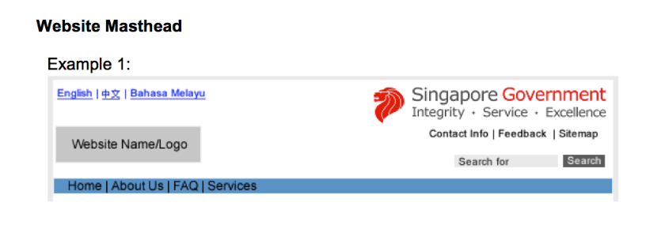
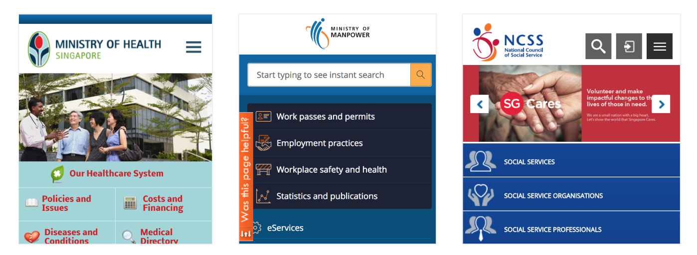
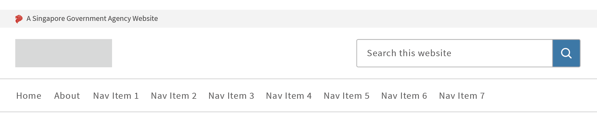
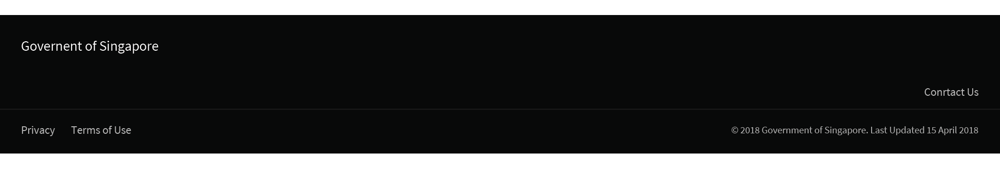
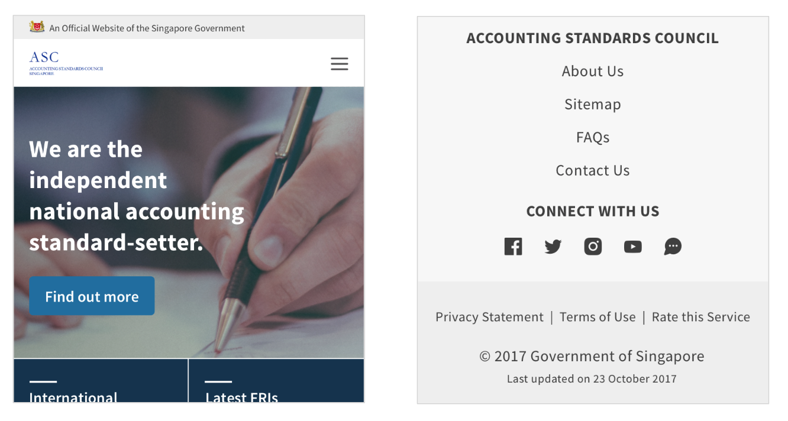

Other Projects
Masthead revamp HDB Resale Portal Meter UX Snapshots Other Projects
The Web Interface Standards is a guideline that all Singapore Government websites have to follow. Unfortunately, since it was written before there were any ux designers in the government, it had a number of strange clauses. The most limiting one of them all, were the ones dictating what goes into the masthead and boy, was it a whole lot.
I initiated the project as part of a week-long hackathon and brought in various designers and front-end devs. During which, we intended to work on a Singapore Government Design System and started by focusing on a few key components, i.e. the masthead.
I lead the design efforts from pixels to layout and assisted with the front end development.
Sketch, HTML/CSS/JS
1. To allow a site to be instantly recognisable as an official government website
2. To provide a consistent experience across government websites
The current masthead guidelines attempts to achieve that by cramping as many items as possible into the top right hand corner of the header. However, it was difficult to implement and the various agencies faced many challenges trying to use it on their official websites.
More importantly, it wasn't helping our citizens better navigate government websites. From our usability testing sessions, we noticed that users started to tune out the various items in the masthead due to the visual overload.
1. The masthead is not designed to be responsive so agencies just don’t implement it in their mobile sites. That affects purpose #1 which is to have a consistent and recognisable mark across all government sites.
2. There are no central resources for the masthead assets so the Singapore Government Logo is implemented in a highly inconsistent manner across websites.
3. The requirements of the masthead are too restrictive so agencies cannot adapt it to their agency’s context and website’s design
4. The masthead is not designed for flexibility of content so agencies have to be creative in squeezing in or removing elements.
Thus, the current masthead is not serving its intended purpose. As designers in government, we couldn't leave it as it is. We started exploring different variations of the masthead that could serve our objectives.
We laid out clear design principles for our intended design:
1. Recognisable yet not distracting
2. Consistent yet flexible
3. Modern and professional
After rounds of exploration and iterations, we settled on the following, forming a clear distinction between the component that informs people this is a government website, and the component that allows for a consistent experience i.e. standard positioning of the search bar.
The grey bar above helps establish the site as a government website, giving flexibility to any content that follows it. The other navigation items helps to keep navigation consistent
We also made a point to reposition various links that were previously in the header down into the footer.
+ it's mobile responsive.
Getting to see a project through from the very first thought in my head to senior leadership presentations has been an exhilarating experience. I am beyond grateful for the support I received along the way.
However, the challenge now is getting the revised masthead implemented in our government websites. Thus, we intend to provide the components as part of the upcoming Singapore Government Design system. Continuous monitoring and usability tests will be conducted after implementation to see how the various components can be improved.
The design system is still a WIP, but you may take a peek at the masthead page here.
Masthead revamp HDB Resale Portal Meter UX Snapshots Other Projects